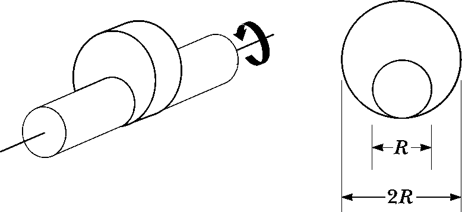

Phy 221 - Homework 03
Problem 3.1
The magnitude of the net force exerted in the x direction on a \(2.50~kg\) particle varies in time as shown in the below figure. Find
- the impulse of the force over the \(5.00~s\) time interval
- the final velocity the particle attains if it is originally at rest
- its final velocity if its original velocity is \(-2.00 ~ m/s\)
- the average force exerted on the particle for the time interval between \(0\) and \(5.00~s\)

Problem 3.2
A \(1200~kg\) car traveling initially at \(v_{Ci} = 25.0~m/s\) in an easterly direction crashes into the back of a \(9000~kg\) truck moving in the same direction at \(v_{Ti} = 20.0~m/s\) (see below figure). The velocity of the car immediately after the collision is \(v_{Cf} = 18.0~m/s\) to the east.
- What is the velocity of the truck immediately after the collision?
- What is the change in mechanical energy of the car–truck system in the collision?
- What is the cause of this change in mechanical energy?

Problem 3.3
Two blocks are free to slide along the frictionless, wooden track shown in the below figure. The block of mass \(m_1 = 5.00~kg\) is released from the position shown, at height \(h = 5.00~m\) above the flat part of the track. Protruding from its front end is the north pole of a strong magnet, which repels the north pole of an identical magnet embedded in the back end of the block of mass \(m_2 = 10.0~kg\), initially at rest. The two blocks never touch. Calculate the maximum height to which \(m_1\) rises after the elastic collision.
Problem 3.4
A billiard ball moving at \(5.00~m/s\) strikes a stationary ball of the same mass. After the collision, the first ball moves at \(4.33~m/s\) at an angle of \(30.0^\circ\) with respect to the original line of motion. Assuming an elastic collision (and ignoring friction and rotational motion), find the struck ball’s velocity after the collision.
Problem 3.5
A uniform piece of sheet metal is shaped as shown in the below figure. Compute the x and y coordinates of the center of mass of the piece.

Problem 3.6
A bullet of mass \(m=8.00~g\) is fired into a block of mass \(M=250~g\) initially at rest at the edge of a frictionless table of height \(h = 1.00~m\) (See below figure). The bullet remains in the block, and after impact the block lands a distance \(d=2.00~m\) from the bottom of the table. Determine the initial speed of the bullet.

Problem 3.7
In a manufacturing process, a large, cylindrical roller is used to flatten material fed beneath it. The diameter of the roller is 1.00 m, and, while being driven into rotation around a fixed axis, its angular position is expressed as \[\theta = 2.50 t^2 - 0.600t^3\] where \(\theta\) is in radians and \(t\) is in seconds.
- Find the maximum angular speed of the roller.
- What is the maximum tangential speed of a point on the rim of the roller?
- At what time t should the driving force be removed from the roller so that the roller does not reverse its direction of rotation?
- Through how many rotations has the roller turned between \(t = 0\) and the time found in part (c)?
Problem 3.8
A grinding wheel is in the form of a uniform solid disk of radius \(7.00~cm\) and mass \(2.00~kg\). It starts from rest and accelerates uniformly under the action of the constant torque of \(0.600~N\cdot m\) that the motor exerts on the wheel.
- How long does the wheel take to reach its final operating speed of \(1200~rev/min\)?
- Through how many revolutions does it turn while accelerating?
Problem 3.9
The combination of an applied force and a friction force produces a constant total torque of \(36.0~ N \cdot m\) on a wheel rotating about a fixed axis. The applied force acts for \(6.00~s\). During this time, the angular speed of the wheel increases from \(0\) to \(10.0~rad/s\). The applied force is then removed, and the wheel comes to rest in \(60.0~s\). Find
- the moment of inertia of the wheel
- the magnitude of the torque due to friction
- the total number of revolutions of the wheel during the entire interval of \(66.0~s\).
Problem 3.10
Many machines employ cams for various purposes, such as opening and closing valves. In the below figure, the cam is a circular disk of radius \(R\) with a hole of diameter \(R\) cut through it. As shown in the figure, the hole does not pass through the center of the disk. The cam with the hole cut out has mass \(M\). The cam is mounted on a uniform, solid, cylindrical shaft of diameter \(R\) and also of mass \(M\). What is the kinetic energy of the cam–shaft combination when it is rotating with angular speed \(v\) about the shaft’s axis?

Problem 3.11
If \(|\vec{A} \times \vec{B}| = \vec{A} \cdot \vec{B}\), what is the angle between \(\vec{A}\) and \(\vec{B}\)?
Problem 3.12
A puck of mass \(m_1 = 80.0~g\) and radius \(r_1 = 4.00~cm\) glides across an air table at a speed of \(\vec{v} = 1.50~m/s\) as shown in the below figure. It makes a glancing collision with a second puck of radius \(r_2 = 6.00~cm\) and mass \(m_2 = 120~g\) (initially at rest) such that their rims just touch. Because their rims are coated with instant-acting glue, the pucks stick together and rotate after the collision (right side of figure).
- What is the angular momentum of the system relative to the center of mass?
- What is the \(\vec{\omega}\) about the center of mass?
Problem 3.13
A puck of mass \(m = 50.0~g\) is attached to a taut cord passing through a small hole in a frictionless, horizontal surface as shown in the below figure. The puck is initially orbiting with speed \(v_i = 1.50~m/s\) in a circle of radius \(r_i = 0.300~m\). The cord is then slowly pulled from below, decreasing the radius of the circle to \(r = 0.100~m\).
- What is the puck’s speed at the smaller radius?
- Find the tension in the cord at the smaller radius.
- How much work is done by the hand in pulling the cord so that the radius of the puck’s motion changes from \(0.300~m\) to \(0.100~m\)?

Problem 3.14
A rigid, massless rod has three particles with equal masses attached to it as shown in the below figure. The rod is free to rotate in a vertical plane about a frictionless axle perpendicular to the rod through the point \(P\) and is released from rest in the horizontal position at \(t=0\). Assuming m and d are known, find
- the moment of inertia of the system of three particles about the pivot.
- the torque acting on the system at \(t=0\).
- the angular acceleration of the system at \(t=0\).
- the linear accel of particle 3 at \(t = 0\).
- the maximum kinetic energy of the system.
- the maximum angular speed reached by the rod.
- the maximum angular momentum of the system.
- the maximum speed reached of particle 2.

Problem 3.15
A uniform plank of length \(2.00~m\) and mass \(30.0~kg\) is supported by three ropes as indicated by the vectors in the below figure. Find the tension in each rope when a \(700-N\) person is \(d = 0.500~m\) from the left end.

Problem 3.16
When a gymnast performing on the rings executes the iron cross, he maintains the position at rest with arms horizontal to the ground. In this maneuver, the gymnast’s feet are off the floor. The primary muscles involved in supporting this position are the latissimus dorsi (“lats”) and the pectoralis major (“pecs”). One of the rings exerts an upward force \(\vec{F}_h\) on a hand as shown in the below figure. The force \(\vec{F}_s\) is exerted by the shoulder joint on the arm. The latissimus dorsi and pectoralis major muscles exert a total force \(\vec{F}_m\) on the arm.
- Using the information in the figure, find the magnitude of the force \(\vec{F}_m\) for an athlete of weight \(750~N\).
- Suppose an athlete in training cannot perform the iron cross but can hold a position similar to the figure in which the arms make a \(45^\circ\) angle with the horizontal rather than being horizontal. Why is this position easier for the athlete?

Solutions
Attempt the above questions for yourself without looking at solutions!
You may trick yourself into thinking you understand without actually understanding.